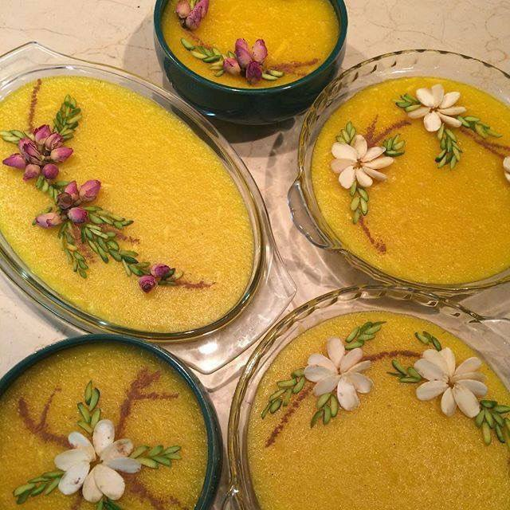

Recipe List Page


AfghanFoods:
Kechiri Gosht Land
- This is a traditional Afghan dish with an amazing and unique taste, commonly enjoyed in different regions of Afghanistan. To prepare this dish, pieces of meat are first coated with flour and salt, then left to dry naturally for several days. This drying process gives the meat a special texture and rich flavor. Once the meat is fully dried, it is cooked together with rice, allowing the rice to absorb the delicious taste of the meat. The result is a flavorful and hearty meal that reflects the authentic taste of Afghan cuisine.
Uzbek Qabuli
- This dish is quite similar to Kichiri Gosht Land, as the rice is cooked together with meat. However, the main difference is that in this dish fresh meat is used, and it is also enriched with raisins and carrots, giving it a sweeter and more colorful flavor.
-
Ashak
- A delicious vegetarian dish made from dough and mixed vegetables, perfect for those who prefer plant-based meals. It offers a memorable and unique taste. This dish is traditionally served with Qurut (dried yogurt sauce) and a special Qorma (Afghan-style stew).
-
Bolani
- Bolani is a popular Afghan dish made from thin dough filled with mashed potatoes, leeks, herbs, and sometimes spinach. It is pan-fried until golden and crispy on the outside, while soft and flavorful on the inside. Bolani is usually served with yogurt, chutney, or fresh salad. It’s a light, healthy, and tasty dish, often enjoyed at family gatherings and special occasions.
Kofta
- Afghan Kofta is a traditional and flavorful dish made from ground lamb or beef mixed with onions, chickpea flour, salt, pepper, and Afghan spices. The meat is shaped into small balls and either fried or cooked in a tomato-based sauce. It’s often served with Aush (Afghan noodle soup), Mantu (Afghan dumplings), or fresh bread. Its soft texture and rich taste make it a popular dish in Afghan gatherings and family meals.
-
Afghan Desserts:
-
Milk Pudding
- Fereni is one of the most beloved and delicious Afghan desserts, prepared with milk. It is not only safe to eat but also offers health benefits.
Abresham Kebab
- Abresham Kebab is a famous Afghan sweet made with flour, sugar, and eggs. Its name means “Silk Kebab” because of its soft and smooth texture. It is a light and tasty dessert, perfect for tea time or parties.
-
Halwa
- Halwa is a rich and flavorful Afghan dessert, typically made from flour, sugar, and butter. With its smooth texture and aromatic spices like cardamom, it’s a comforting treat enjoyed during celebrations and special occasions. Its sweet taste and warmth make it a perfect dessert for family gatherings.
-
Cream Roll
- Cream Roll is a popular Afghan dessert made from a soft and fluffy sponge cake filled with sweet, fresh cream. This dessert is known for its light texture and pleasant sweetness, making it an enjoyable treat for people of all ages. Cream Roll is often beautifully decorated and served on special occasions like birthdays, weddings, and festive celebrations. Its simple ingredients and delicious taste make it a timeless favorite in Afghan sweets.

